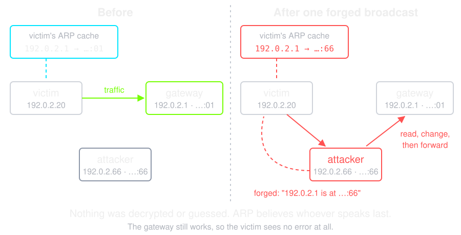
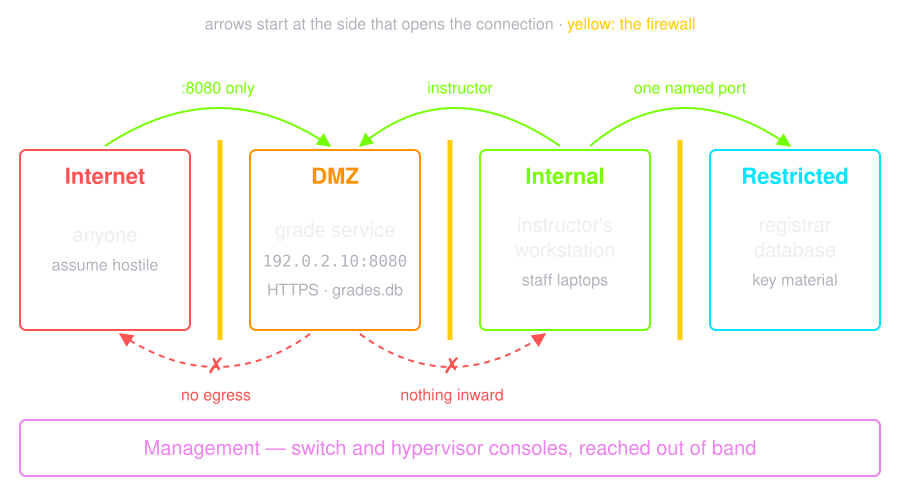
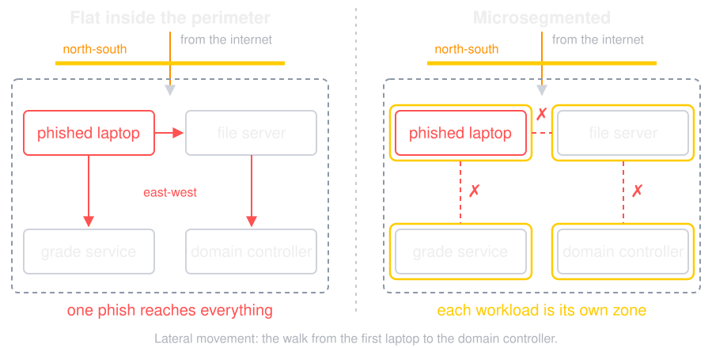
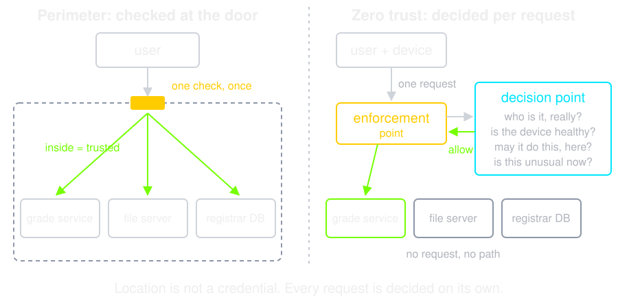
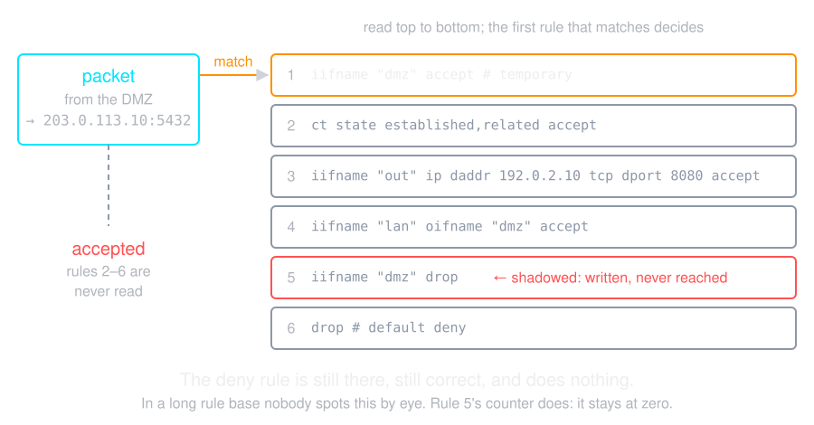

The Network Was Built on Trust
Lecture 6 ended on TLS protecting the channel. This lecture is the channel
itself: what the network believes, and who can lie to it.
-
TCP/IP was designed for a small research network where every operator
knew every other operator. Authentication was not an omission — it was
out of scope
-
Consequences we still live with:
-
A source IP address is a claim
- An ARP reply is believed by whoever hears it
- A DNS answer is accepted if it arrives first
- A BGP route announcement is accepted because a peer said so
-
Everything in this lecture is a patch over that original assumption
In the Wild: Pakistan Telecom and YouTube, 2008
-
24 February 2008: to block YouTube at home, Pakistan Telecom announced
208.65.153.0/24. Its upstream, PCCW, passed it on to the
world
-
YouTube announced the wider
/22. Routers prefer the
most specific route, so the world's YouTube traffic went to
Pakistan
-
The claim from the slide before: no router
asked whether that network had the right to announce the prefix. It was
over in about two hours, when PCCW withdrew the route
-
What stops it: an upstream that filters what its customers may announce,
and RPKI — signed records of who may
originate which prefix, checked by the routers
A hijacker gets the packets, not the certificate — TLS from lecture 6
still holds.
Source:
RIPE NCC, YouTube Hijacking: A RIPE NCC RIS case study
Passive: Listening
-
Sniffing — read traffic you can reach.
Trivial on shared media and on any network you have a port on
-
Switches made it harder by accident, not by design: a switch forwards by
MAC address, so you only see your own traffic
-
Until MAC flooding overflows the
switch's address table and it fails open, broadcasting everything
-
The defence is not "stop them listening" — it is
encryption, so that listening gains
nothing. Lecture 1's rule for passive attacks: prevent, do not detect
Active: Lying
-
ARP spoofing — ARP maps an IP address to
a MAC address on the local network, and hosts cache any reply. Announce
that your MAC owns the gateway's IP, and you are the gateway
- ARP has no authentication at all. There is nothing to break
-
DNS spoofing — answer the query before
the real server does, or poison a resolver's cache so it lies to
everyone behind it
-
IP spoofing — forge the source address.
Easy for UDP; harder for TCP, which needs the sequence number
-
All three build the same thing: a
machine in the middle
ARP Spoofing, Drawn

ARP Spoofing, in One Broadcast
Three network namespaces on one bridge, inside a container with no network
attached — the lab rule from lecture 1, kept.
$ victim ping -c 1 -q 192.0.2.1 > /dev/null
$ victim ip neigh show 192.0.2.1
192.0.2.1 dev eth0 lladdr 02:00:00:00:00:01 REACHABLE
$ attacker ip addr add 192.0.2.1/32 dev eth0
$ attacker arping -U -c 1 -I eth0 192.0.2.1
ARPING 192.0.2.1 from 192.0.2.1 eth0
Sent 1 probes (1 broadcast(s))
Received 0 response(s)
$ victim ip neigh show 192.0.2.1
192.0.2.1 dev eth0 lladdr 02:00:00:00:00:66 STALE
$ victim ping -c 1 192.0.2.1 | tail -2
1 packets transmitted, 1 received, 0% packet loss, time 0ms
rtt min/avg/max/mdev = 0.095/0.095/0.095/0.000 ms
-
One unauthenticated packet rewrote the victim's cache. The ping still
succeeds — it is the attacker answering, and nothing says so
In the Wild: Kaminsky's DNS Attack, 2008
-
DNS spoofing from Active: Lying, made reliable. A resolver
accepted the first answer that matched a
16-bit query ID, and some sent every
query from one fixed port
-
The TTL was meant to limit the attacker to one race per name until the
record expired. Kaminsky asked for names that were never cached, so
every query was a new race
-
The winning forgery did not answer the question asked. It said "ask
www.foo.com, it is here" — and the resolver cached the lie
for everyone behind it
-
Fixed in a coordinated patch on 8 July 2008 (CVE-2008-1447):
random source ports. Only DNSSEC makes a
forged answer detectable
Sources:
CERT/CC, VU#800113, Multiple DNS implementations vulnerable to cache
poisoning
·
Dan Kaminsky, Black Hat Japan 2008
Kaminsky's Race, Drawn

What the Middle Buys
- Read everything · change everything · impersonate either side
-
Against plaintext this is total. Against TLS it is much less — the
attacker can drop traffic, but cannot produce a certificate for the name
-
Which is why the attack shifted to
stripping: keep the victim on
http:// and there is no certificate to forge
-
And why HSTS from lecture 6 matters here —
the browser refuses to be downgraded, so there is nothing to strip
-
Layer 2 answers exist too:
dynamic ARP inspection and
DHCP snooping on the switch, which drop the
forged replies before anyone hears them
Denial of Service
| Volumetric |
Fill the pipe. Measured in bits per second |
| Protocol |
Exhaust a state table — a SYN flood opens connections it never
finishes. Measured in packets per second
|
| Application |
Ask for the expensive thing. A few requests per second can be enough
|
-
Amplification is what makes the first one
cheap: send a small query with a forged source, and the server sends a
large answer to the victim
-
UDP services with no handshake are the reflectors — DNS, NTP, memcached.
US-CERT TA14-017A tabulates the factors, and they run from tens to tens
of thousands
-
You cannot absorb a volumetric attack on your own link. That defence is
bought upstream
In the Wild: GitHub and memcached, 2018
-
28 February 2018: GitHub received
1.35 Tbps — the amplification from the
slide before, reflected off memcached servers left open to the internet
on UDP
-
A forged source address and a factor of up to
51,000: one byte sent, up to 51 KB
delivered to GitHub
-
GitHub's own link could not take it. It moved its traffic to Akamai's
scrubbing network — the defence bought upstream — and was fully back
within ten minutes of the alert
-
What stops it at the source: memcached off UDP and off the internet, and
networks that drop packets with forged source addresses
Source:
GitHub, February 28th DDoS Incident Report
Reconnaissance
- Before any of the above: what is here, and what is listening?
-
Host discovery, then port scanning, then banner grabbing to name the
version, then a lookup of what that version is vulnerable to
-
On the public internet this is continuous and automated. A new
address receives its first scan within minutes
-
Which reframes the defence: you cannot avoid being found, so
reduce what is findable — the attack
surface argument from lecture 1, applied to open ports
In the Wild: Mirai and Dyn, 2016
-
Mirai scanned the internet for Telnet and logged in with a list of
62 default usernames and passwords —
cameras, routers, recorders. It peaked at about 600,000 devices
-
21 October 2016: it flooded Dyn, a DNS provider. Sites that used Dyn —
GitHub, Netflix, PayPal, Reddit, Twitter — stayed up, but their names no
longer resolved
-
The slide before, automated: scan, find, log in. The failure is lecture
4's — a default password is no authentication at all
-
The grade service is only as available as its name: a second DNS
provider is a defence too
Source:
Antonakakis et al., Understanding the Mirai Botnet, USENIX Security
2017
Zoning
-
A security zone is a group of systems
with the same trust level and the same policy
-
Grouping by trust rather than by geography or department is the whole
idea — a laptop in the building is not more trusted than one outside it
-
Traffic within a zone flows freely. Traffic
between zones is controlled, inspected and logged
-
This is lecture 2's boundary drawing, made concrete in addresses and
interfaces
The Classic Layout
| Untrusted |
The internet. Assume hostile |
| DMZ |
Public-facing services. Reachable from outside, and trusted by nobody
|
| Internal |
Workstations and internal applications |
| Restricted |
Databases, domain controllers, key material |
| Management |
Switch and hypervisor consoles, out-of-band cards. The keys to
everything
|
The rule that gives the DMZ its value:
a DMZ host initiates nothing inward, except flows written down by
name.
Compromising the web server then buys the attacker one machine.
The Grade Service, Zoned

The grade service faces the internet, so it lives in the DMZ. Its SQLite
file sits beside it, so it needs no inward flow — and whoever takes this
host takes every grade. A database server would go in Restricted, reached
by one named flow.
North-South and East-West
-
North-south — traffic crossing the
perimeter. Historically where every control was placed
-
East-west — traffic between internal hosts.
Historically unfiltered, unlogged, and far larger in volume
-
Which is exactly the path an intruder uses.
Lateral movement is the phase between the first
compromised laptop and the domain controller
-
Microsegmentation pushes policy down to
the individual workload, so east-west traffic gets the same treatment
north-south always had
North-South and East-West, Drawn

In the Wild: Target, 2013
-
Attackers phished an HVAC contractor and took its login to a Target
system for vendors' billing. From there they reached the point-of-sale
terminals in Target's stores
-
About 40 million card numbers and up to 70 million customer records left
— over FTP, to servers outside, for two weeks
-
The flat network from the slide before: the US Senate report found that
Target "failed to properly isolate its most sensitive network assets"
-
What stops it: the vendor portal in its own zone with no path to the
tills, and an egress allowlist naming the few places the tills may send
to
Source:
US Senate Commerce Committee, A "Kill Chain" Analysis of the 2013
Target Data Breach (2014)
Target, Drawn
![The HVAC vendor is phished and its password stolen. Step 1: the attacker logs in to Target's vendor billing portal. Step 2: from there to the point-of-sale terminals, with a RAM scraper on each, inside one flat network. Step 3: card data is collected on an internal server. Step 4: passed to another internal server. Step 5: sent by FTP to the attacker's drop server abroad. A zone wall between the portal and the terminals, or an egress allowlist at step 5, would have stopped it. How step 2 happened is not public](img/target.svg)
Zero Trust
Never trust, always verify. Location is not a credential.
-
The perimeter model assumes inside is safe. Remote work, cloud services
and phones on the corporate wifi ended that assumption
-
Zero trust replaces it with per-request decisions:
-
Authenticate the user and the device, every time
- Authorize the specific resource, not the network
-
Assume breach — design as though the attacker is already inside
-
NIST SP 800-207 is the reference. It is a
direction, not a product, whatever
the vendor says
Zero Trust, Drawn

The decision point and the enforcement point are NIST SP 800-207's own
names. Lecture 4's allow(s, a, o), asked on every request.
In the Wild: Operation Aurora, 2009
-
Late 2009: an intrusion into Google, which Google attributed to the
Chinese government, ended in the theft of intellectual property. Several
other large companies were targeted too
-
Google's lesson was the one on Zero Trust: once an attacker is
inside the perimeter, the privileged intranet trusts them
-
Its answer was BeyondCorp: no privileged
intranet at all. Every request is checked for user and device, from any
network, without a VPN
-
The decision point from the slide before, built at the scale of a whole
company — and published, so others could copy it
Sources:
Google, Transparency in the shadowy world of cyberattacks (2022)
·
Ward and Beyer, BeyondCorp: A New Approach to Enterprise Security,
;login: 2014
What a Firewall Is
-
A choke point between two zones where a
policy is enforced and traffic is logged
-
The value comes from being the only way through. A
firewall with a route around it is decoration
-
And from default deny: permit what is
needed, drop the rest. The opposite ordering is a list of things you
happened to think of
Three Generations
| Packet filter |
Each packet judged alone, by address and port. Fast, and cannot tell a
reply from an unsolicited packet
|
| Stateful |
Tracks connections, so replies are allowed and unsolicited packets are
not. The baseline everywhere
|
| Application layer |
Understands the protocol. A proxy terminates the connection and makes
its own
|
-
Next-generation adds identity and
application awareness, so a rule can say "the finance group may reach
the ERP" rather than naming subnets
-
A WAF (web application firewall) is an
application-layer firewall for HTTP. It buys time to patch; it does not
fix the code from lecture 6
Egress Filtering
-
Almost everyone filters inbound. Far fewer filter
outbound, and that is where the
detection value is
-
Malware has to call home; stolen data has to leave. Both are outbound
connections from a host that has no business making them
-
A database server that suddenly opens an HTTPS connection to an unknown
address is a high-quality signal — rare enough
to beat the base-rate problem from lecture 5
-
Force outbound traffic through a proxy that authenticates and logs, and
deny direct routes
The Rule Base, Written
The zones of the grade service, as network namespaces in a container with
no network attached. The firewall's forward chain, loaded with
nft -f before each run:
table inet fw {
chain forward {
type filter hook forward priority 0; policy drop;
ct state established,related accept
# the internet may reach the grade service, and nothing else
iifname "out" ip daddr 192.0.2.10 tcp dport 8080 counter accept
# the internal zone may reach the DMZ
iifname "lan" oifname "dmz" counter accept
# the DMZ initiates nothing: not inward, not outward
iifname "dmz" counter drop
counter drop
}
}
Default deny is the policy; the last rule only counts what it drops. The
DMZ rule above it is the egress filter from the slide before.
Five Connections, Five Answers
$ internet curl --cacert cert.pem -c jar -d name=4001 \
-d password=tulip-river-42 https://192.0.2.10:8080/login
hello 4001
$ internet curl --cacert cert.pem -b jar 'https://192.0.2.10:8080/grades?course=IS'
4001 IS 12
$ dmz nc -zv -w 2 203.0.113.10 5432
nc: connect to 203.0.113.10 port 5432 (tcp) timed out: Operation now in progress
$ dmz nc -zv -w 2 198.51.100.20 443
nc: connect to 198.51.100.20 port 443 (tcp) timed out: Operation now in progress
$ internet nc -zv -w 2 203.0.113.10 5432
nc: connect to 203.0.113.10 port 5432 (tcp) timed out: Operation now in progress
$ fw nft list chain inet fw forward | grep -o 'iifname.*\|counter.*'
iifname "out" ip daddr 192.0.2.10 tcp dport 8080 counter packets 2 bytes 120 accept
iifname "lan" oifname "dmz" counter packets 0 bytes 0 accept
iifname "dmz" counter packets 4 bytes 240 drop
counter packets 2 bytes 120 drop
-
internet, dmz, fw run the command
in that zone. The grade service is lecture 6's, over HTTPS with a
certificate for 192.0.2.10; nc on
:5432 stands in for an internal database
-
The DMZ rule counted 4 packets: two
tries, each sent twice. A DMZ host that tries at all is news — that
counter is the alarm
In the Wild: SolarWinds SUNBURST, 2020
-
Attackers put a backdoor into signed updates of SolarWinds Orion, a
network monitoring product. Fewer than 18,000 customers installed one
-
After up to two weeks asleep, it looked up a name under
avsvmcloud[.]com, then talked HTTP dressed as Orion's own
telemetry
-
Each call home was an outbound connection
from a server with no business on the internet — the DMZ counter on the
slide before
-
The responders' advice was this rule: block all internet egress from
Orion servers. Count DNS as egress — the first call home was a lookup
Sources:
FireEye (Mandiant), Highly Evasive Attacker Leverages SolarWinds Supply
Chain
·
SolarWinds, Form 8-K, 14 December 2020
Rules, and How They Go Wrong
-
Rules are evaluated in order, first
match wins. A broad rule near the top silently shadows everything below
it
-
The final rule is
deny all, and it should
log
-
Rule rot is the real failure: a "temporary"
any-any rule from a migration three years ago that nobody dares remove
-
Review the rule base on a schedule, with an owner and a justification
per rule
-
NAT is not a firewall. It hides addresses
as a side effect of running out of them, and it is not a policy
First Match Wins, Drawn

One Temporary Rule
The same rule base, plus one line from a migration:
$ fw nft insert rule inet fw forward iifname dmz counter accept comment temporary
$ dmz nc -zv -w 2 203.0.113.10 5432
Connection to 203.0.113.10 5432 port [tcp/*] succeeded!
$ fw nft list chain inet fw forward | grep -o 'iifname.*'
iifname "dmz" counter packets 4 bytes 216 accept comment "temporary"
iifname "out" ip daddr 192.0.2.10 tcp dport 8080 counter packets 0 bytes 0 accept
iifname "lan" oifname "dmz" counter packets 0 bytes 0 accept
iifname "dmz" counter packets 0 bytes 0 drop
-
The DMZ reaches the database. The deny rule is still there, still
correct, and its counter says 0
-
A rule that never matches is a finding. Review the counters, not just
the text
Where Detection Sits
-
IDS (intrusion detection system) observes
a copy of the traffic and alerts. It cannot be a bottleneck and cannot
stop anything
-
IPS (intrusion prevention system) sits
inline and can drop. Which means a false alarm is now an outage, and the
device is a single point of failure
-
Placement decides what you see: outside the firewall shows you the
internet's noise, inside shows you what got through.
Inside is the useful one
-
And the modern limitation: most traffic is encrypted. Either you
terminate TLS at a proxy — with all the trust and privacy questions that
raises — or you inspect metadata and move detection to the host